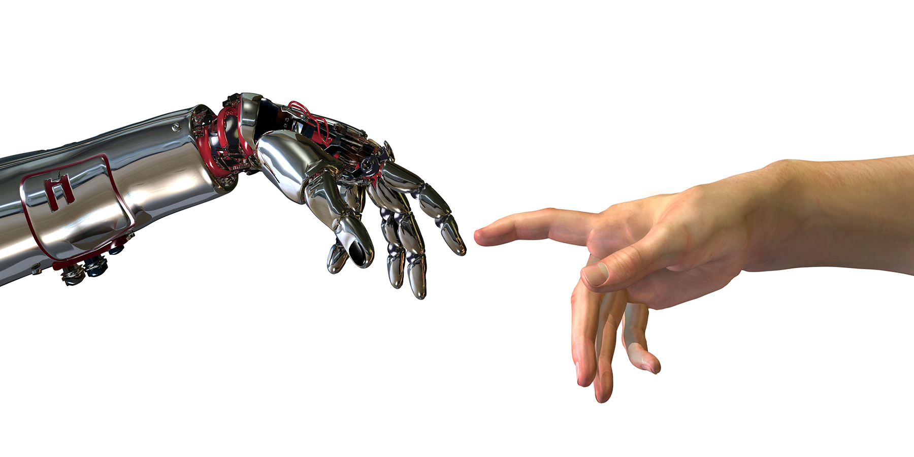

Everyone has that one favourite video game from their childhood, but what happens when you want that nostalgia when your old system is long gone? Enter the Internet. By dumping the data off classic cartridge games and developing special software, called emulators, you can play your childhood classics on your PC or mobile phone. These backups of the game files are called ROMs, and for decades have been a source of controversy in the gaming community. Of course, once these ROMs became publicly available for free, a whole new type of game was born. Developers would modify the game files to make entirely new games, known as ROM hacks. One of the most widely known ROM hacking community is that of Super Mario 64. ROM hacks of that game exist in the hundreds, from simple joke hacks where Mario's head is replaced with a butterfly to elaborate masterpieces with all-new custom coded levels and power-ups. In the summer of 2017, a well known ROM hacker released a project that was an instant hit. It allowed up to 24 players to play Super Mario 64 at once, by setting up a server and connecting to each other with their IP addresses. Almost immediately, Nintendo took notice and made their move. The project was nearly shut down within 3 days of its launch. The legality of ROMs and ROM hacks is a bit of a grey area. By dumping the files off of a cartridge, a user is creating a "backup file" that they own and are legally entitled to create, so long as they own the physical game. Sharing the files online, however, was not something that was accounted for when the laws were written. When fans create ROM hacks, the game is technically still the same underneath the additions, and therefore the intellectual property of the original developers. The additions, however are the intellectual property of the fan who created the modified game. Downloading an unmodified ROM from the Internet is illegal, unless the person downloading it owns a physical copy of the game, in which case the ROM would fall into the category of a "backup file." Downloading ROM hacks, however, is foggy because of their unclear legal status. The case of Super Mario 64 Online is just another example of this, because even after Nintendo issued copyright notices and cease and desist earnings to the creator, the project lived on thanks to the millions who had already downloaded it.
Impact on Society
